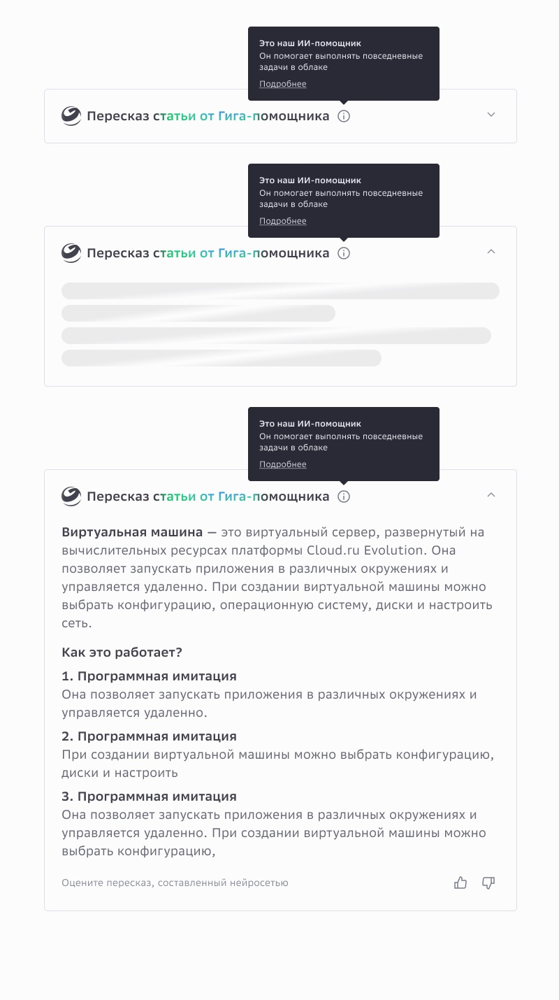
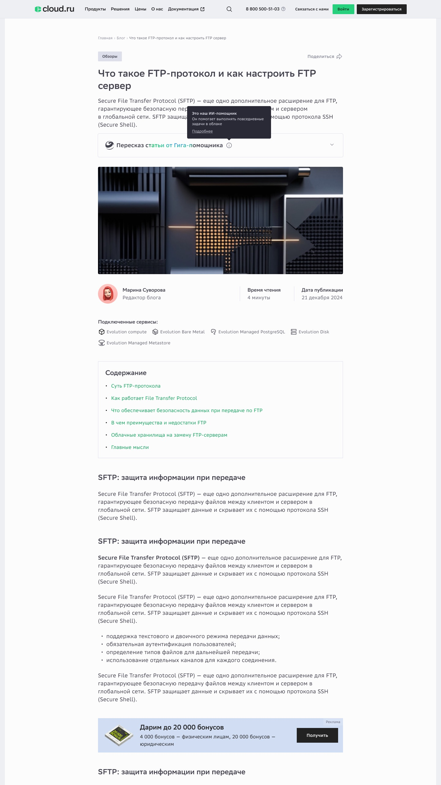
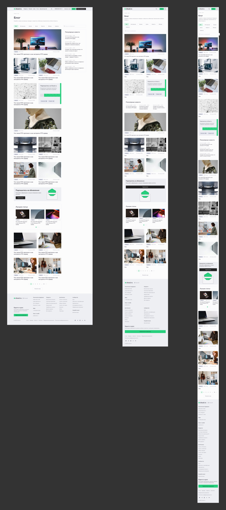

Cloud.ru website
Публичные поверхности cloud.ru, которые я делал, пока работал в команде сайта. Это были отдельные задачи, а не один проект: страница наград, календарь мероприятий и страницы событий, блог и блок ИИ-пересказа в статьях, плюс переиспользуемые блоки, из которых собирались остальные страницы. Каждая показана в том виде, в каком я её сдал, и на тех ширинах, с которыми она уехала.
Страница наград
Страница для всех рейтингов и наград компании. Три первых места идут впереди иллюстрированными карточками, у каждой указаны источник и год; дальше полный список группируется по годам и фильтруется по типу: рыночные рейтинги, продуктовые и отраслевые награды, рейтинги работодателей. Первый экран говорит, какие три важнее всего. За справкой люди идут в список.


Календарь мероприятий
Календарь вебинаров, конференций, хакатонов и лекций. Ближайшие события идут первыми, с датой регистрации и кнопкой записи; прошедшие стоят ниже со ссылкой на запись и фильтруются по сервису и по наличию видео. Между ними блок подписки: он ловит тех, кому сегодня не на что пойти.

Страница события
Страница отдельного события. Теги формата — вебинар, онлайн, для ИТ — стоят над заголовком: во что человек ввязывается, видно раньше названия. Счётчик регистраций стоит рядом с кнопкой и работает как живое социальное доказательство.

Блог и Гига-пересказ
Блог: каталог, страница статьи, страницы авторов. Главное здесь — блок пересказа: выжимку пишет ассистент GigaChat, и она открывает статью, чтобы читатель решил, стоят ли следующие десять минут его времени. Я спроектировал компонент и описал его поведение до уровня, с которого фронтенд мог собирать: четыре фазы — ожидание, загрузка, стриминг, готово; скелет с мерцанием, пока модель работает; предложения проявляются по одному с интервалом 700 мс; волна градиента от синего к зелёному идёт по знаку GigaChat и заголовку синхронно, три секунды ход и две секунды покой.



Блоки-карусели
Переиспользуемые блоки-карусели для страниц сайта, описанные один раз набором: число карточек, состояния, поведение стрелок и точек и то, как каждый блок ужимается при сужении экрана. Другие дизайнеры и разработчики собирают из них страницы, не спрашивая меня.

Обложки разделов
Обложки разделов сайта, которые выпускались раз в квартал под текущую бренд-кампанию. Рамка фиксирована, слот под текст фиксирован, меняется только графика. Новый квартал стоит замены картинки.

Избранные поверхности маркетингового сайта Cloud.ru. Названия событий и статей, даты, авторы и счётчики регистраций — условные, из макетов.